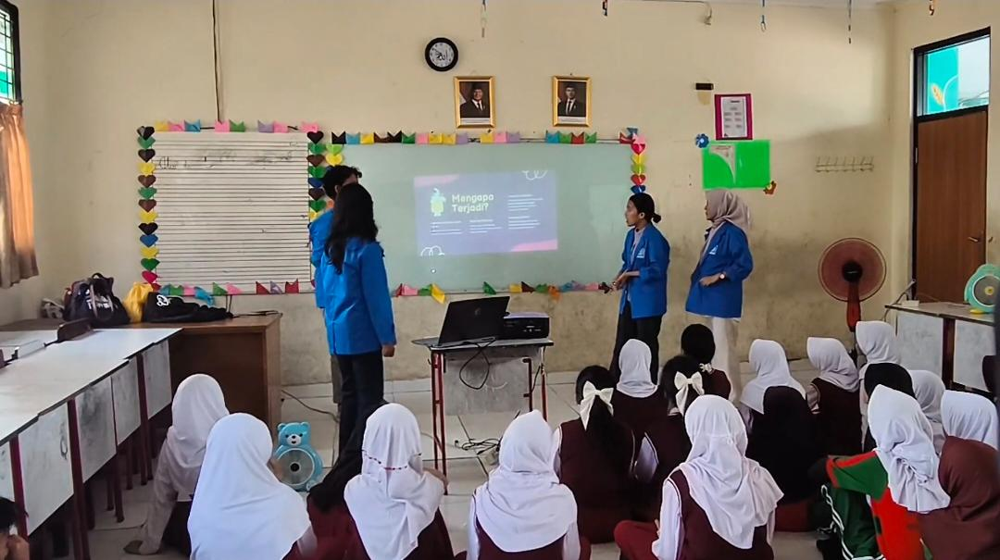
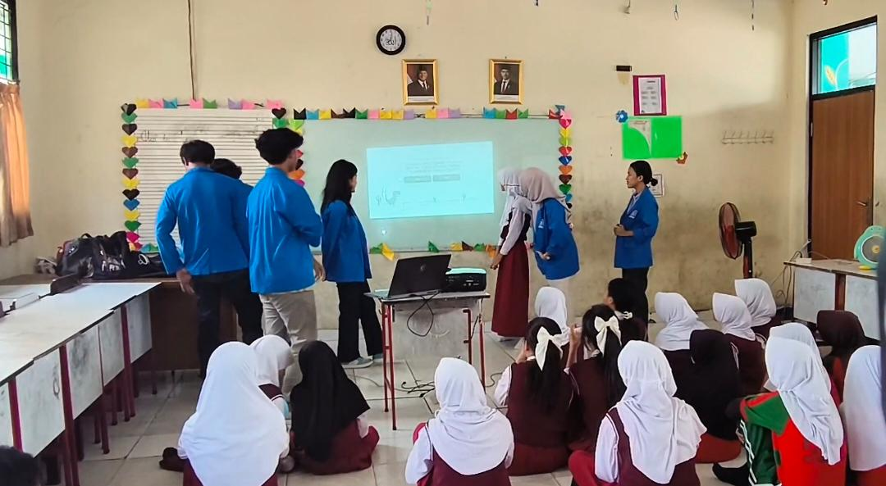
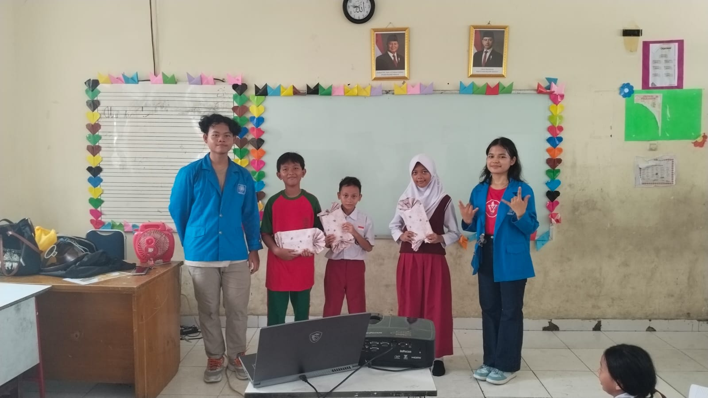
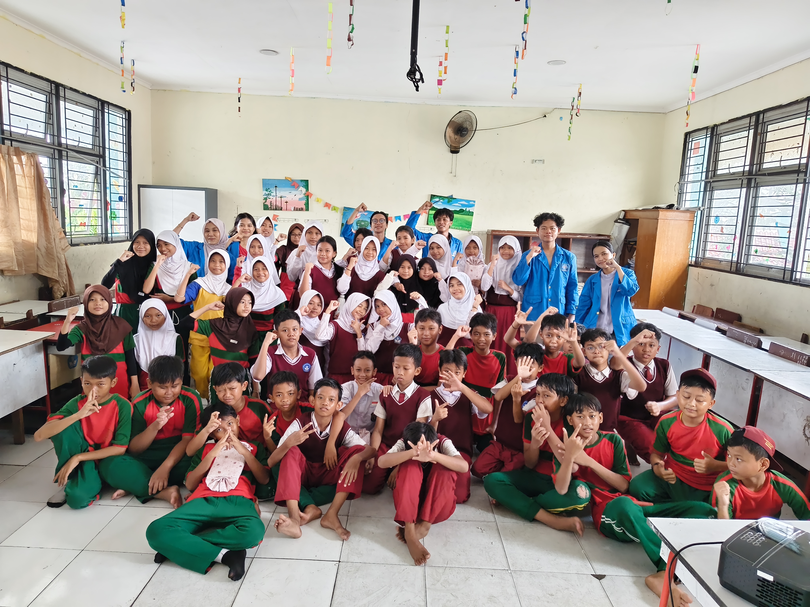

Mahasiswa Program Studi Sistem Informasi Universitas Bina Sarana Informatika (UBSI) Kampus Ciledug melaksanakan kegiatan Pengabdian Kepada Masyarakat (PKM) berupa sosialisasi anti bullying di SDN Pondok Kacang Timur 02, Tangerang Selatan.
Kegiatan ini bertujuan untuk meningkatkan pemahaman siswa mengenai pentingnya menciptakan lingkungan sekolah yang aman, nyaman, dan bebas dari tindakan bullying. Sosialisasi dilaksanakan secara tatap muka di kelas 5A dan diikuti oleh 53 siswa dan siswi.
Sesi Penyampaian Materi
Tim pelaksana kegiatan terdiri dari M. Andika Farhansyah sebagai ketua pelaksana bersama Muhammad Hafizh Ramadhan, Wulan Sitompul, Julita Manalu, Sahira Nazara Putri Kayla, dan Rasyiid Nur Rizqi.
Dalam kegiatan tersebut, mahasiswa memberikan edukasi mengenai pengertian bullying, jenis-jenis bullying, dampak negatif bullying, serta cara mencegah dan mengatasi tindakan perundungan di lingkungan sekolah.


Antusiasme Peserta
Para siswa terlihat antusias mengikuti kegiatan dari awal hingga akhir. Banyak peserta aktif bertanya dan berpartisipasi selama sesi berlangsung.


Harapan Kegiatan
Pihak sekolah memberikan apresiasi atas pelaksanaan kegiatan Pengabdian Kepada Masyarakat yang dinilai mampu memberikan edukasi positif kepada siswa mengenai pentingnya budaya anti bullying di lingkungan sekolah.
Melalui kegiatan ini, mahasiswa Universitas Bina Sarana Informatika berharap dapat memberikan kontribusi positif kepada masyarakat sekaligus mengimplementasikan ilmu pengetahuan secara langsung di lingkungan pendidikan.
Kegiatan Pengabdian Kepada Masyarakat ini diharapkan dapat memberikan dampak positif dalam membentuk karakter siswa serta menciptakan lingkungan sekolah yang aman, nyaman, dan bebas dari tindakan bullying. Dengan adanya edukasi sejak dini, siswa diharapkan mampu menerapkan sikap saling menghargai, empati, dan toleransi dalam kehidupan sehari-hari.